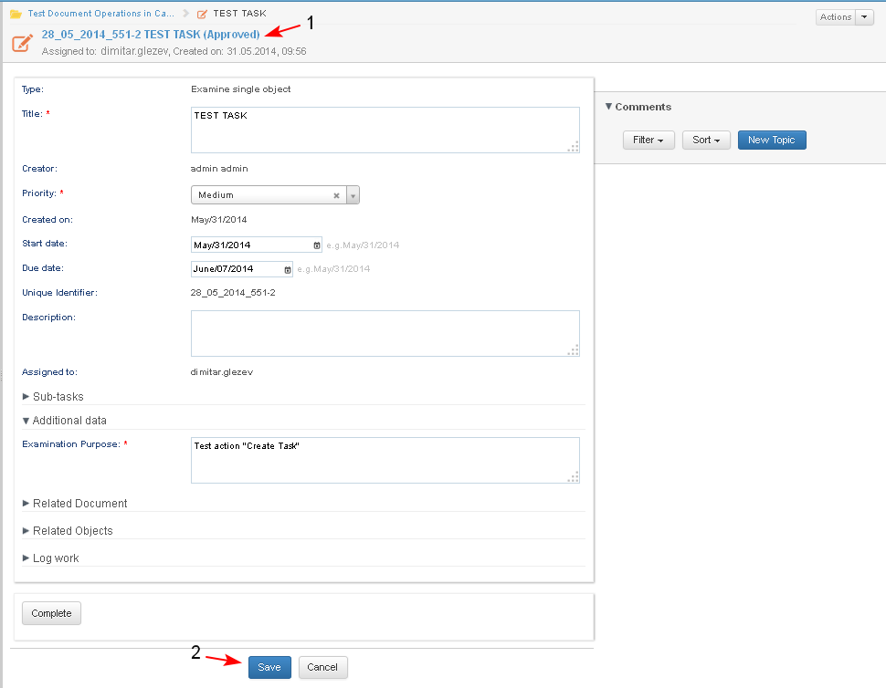

- The user starts the operation from:
- Case Dashboard/ Tasks dashlet/ button Actions / "Create Task" (1-2)
- Case Details page/ button Actions / "Create Task"

- The system opens the screen for selecting the task type from a drop down list. The user selects the task type (1-2).

- The system opens the screen for entering the task details. The user:
- should fill in all mandatory fields for the selected task type. (here: Title, Priority, Assignee, Examination Purpose 1-2-3-4)
- may enter other data
- The user clicks "Create Task" (5).

- The system opens the task in edit mode. The task is created with status "Approved" (1) and appears on the case dashboards of the task creator and the task assignee.
- The user may edit the task, enter additional data and after that he/ she clicks "Save" (2).

- The task status changes to "In progress" (1).
- The newly created task is automatically related with the case in which it was created. The type of the relation is "Part of" (2).

- On the case dashboard the task is visible (1) and a tool tip displays short information about the task (2). A list of available actions for the current user is displayed (3-4).